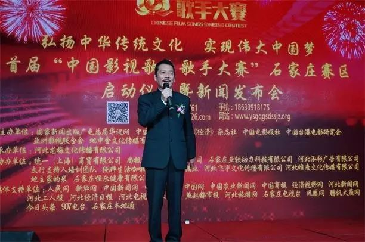

首届“中国影视歌曲歌手大赛”河北省石家庄分赛区启动仪式暨新闻发布会隆重举行
歌声嘹亮、重唱经典。2016年10月14日，首届“中国影视歌曲歌手大赛”河北省赛区石家庄分赛区启动仪式暨新闻发布会在河北希尔顿酒店隆重举行。出席本次石家庄分赛区启动仪式的嘉宾有，中国影视歌曲歌手大赛组织委员会姜国顺主席、杜光明副主席、中国人民解放军陆军参谋学院原副院长杨则冉将军，河北省政协原秘书长解玉琪，原省委宣传部河北出版传媒集团监事会胡银山主席，电视剧《海棠依旧》周恩来总理扮演者国家一级演员孙维民老师，河北省榜书协会李忠文主席，首届中国影视歌曲歌手大赛河北赛区组委会李跃华主席、孔建超秘书长、首届中国影视歌曲歌手大赛河北赛区副主席、石家庄分赛区陈梅华主席，首届中国影视歌曲歌手大赛河北赛区副秘书长、石家庄分赛区执行主席魏钦华，首届中国影视歌曲歌手大赛河北区副秘书长、石家庄分赛区秘书长闫涛等。
“你想要精彩，我给你舞台”石家庄分赛区陈梅华主席表示，河北龙梅文化传播有限公司作为石家庄分赛区赛事承办方，深知本次大赛意义重大，全面学习践行社会主义核心价值观，弘扬主旋律，传播正能量。同时也为石家庄创建全国精神文明城市贡献一份力量。为满足广大影视歌曲爱好者的需求，搭建一个展示才艺的平台。石家庄人民朴实善良、热情好客，希望本次赛事的启动可以为弘扬河北文化传承推波助燃。重温影视经典，唱响时代旋律，希望选手们以拼搏进取的姿态绽放属于自己的精彩。
在仪式活动中还举行了现场书法展示环节，由河北省榜书协会主席李忠文先生与石家庄分赛区主席陈梅华女士，同台现场挥毫泼墨书写了大气磅礴的书法作品“鹰”和“龙”，以及号称“葡萄王”的军旅书画家王桥香先生创作的书画作品，现场赠送给赛区组委会以示祝贺。据石家庄大赛组委会介绍，启动仪式当天所获赠名家书画作品，组委会将在后期举行义拍活动，并成立“龙梅爱心基金”所得全部款项均用于慈善公益事业。
仪式现场，著名表演艺术家，国家一级演员，电视连续剧《海棠依旧》中周总理扮演者孙维民老师现场做了精彩的表演，让与会嘉宾亲眼目睹了表演艺术大家的风采；河北籍著名表演艺术家、原河北歌舞剧院民族乐团团长、国家一级演员马越老师演唱的《我是中国人》俨然变成全场集体大合唱，场面甚是壮观。随后著名歌手07届《大地欢歌》总冠军李鹏宇、以及来自《超级女声》的歌手吴婷和素有小赵薇之称的童星周美君分别进行了精彩演绎，把活动现场的氛围推向了一个又一个的高潮。

下一篇：河北省赛区启动仪式暨新闻发布会